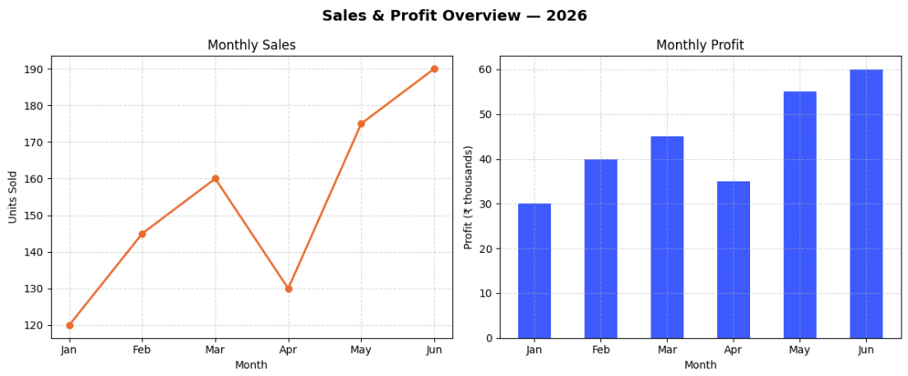
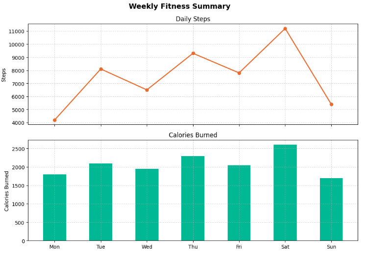
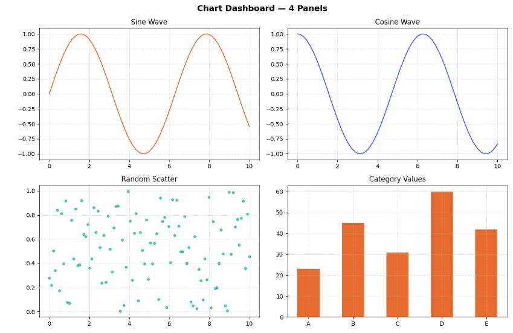

Subplots in Python — Multiple Charts, One Figure
Sometimes one chart isn't enough. You've got sales data and profit data covering the same six months, and putting both on one graph makes it unreadable. Subplots solve this — each dataset gets its own panel, but everything lives inside one figure. Cleaner to look at, easier to compare, and more impressive to show.
This guide covers everything from a basic two-chart layout to a full 2×2 dashboard grid. Three working examples, a parameter reference, common mistakes to avoid, and a mini project at the end.
How plt.subplots() works
One function call sets up the entire layout. Here's the sequence:
import matplotlib.pyplot as plt — all you need for a basic subplot layout.
This creates the grid and returns two things: fig (the whole canvas) and axes (the individual panels). More on both below.
Each panel has its own axis object. Call ax1.plot(), ax2.bar() etc. — they don't touch each other.
Use ax.set_title(), ax.set_xlabel(), ax.set_ylabel() on each axis. Labels go on the panel, not the whole figure.
plt.tight_layout() auto-adjusts padding so nothing overlaps. Then plt.show() renders it. Don't skip either.
Key parameters
Everything you can pass to plt.subplots() and related functions:
| Parameter | What it does | Example |
|---|---|---|
nrows, ncols | Defines the grid shape. plt.subplots(2, 3) = 2 rows, 3 columns = 6 panels. | plt.subplots(1, 2) |
figsize | Total width and height of the entire figure in inches. Both panels share this space. | figsize=(12, 5) |
sharex | Links x-axes across all panels. Removes duplicate tick labels on stacked charts. | sharex=True |
sharey | Links y-axes across all panels in a row. Useful when comparing values on the same scale. | sharey=True |
plt.suptitle() | Adds one big title above the whole figure — the "headline" that covers all panels. | plt.suptitle('Overview') |
plt.tight_layout() | Auto-adjusts padding between and around panels so nothing overlaps or gets clipped. | Call before plt.show() |
ax.set_title() | Sets the title on one individual panel — not the whole figure. | ax1.set_title('Sales') |
fig.set_size_inches() | Resize the figure after it's already been created. | fig.set_size_inches(14, 6) |
Example 1 — two charts side by side
The simplest subplot setup. One row, two columns — a line graph on the left and a bar chart on the right, both showing the same six months of data:
import matplotlib.pyplot as plt
months = ['Jan', 'Feb', 'Mar', 'Apr', 'May', 'Jun']
sales = [120, 145, 160, 130, 175, 190]
profit = [30, 40, 45, 35, 55, 60]
fig, (ax1, ax2) = plt.subplots(1, 2, figsize=(12, 5))
# Left panel — line graph
ax1.plot(months, sales, color='#e86c2f', marker='o', linewidth=2)
ax1.set_title('Monthly Sales')
ax1.set_xlabel('Month')
ax1.set_ylabel('Units Sold')
ax1.grid(True, linestyle='--', alpha=0.5)
# Right panel — bar chart
ax2.bar(months, profit, color='#3d5afe', width=0.5)
ax2.set_title('Monthly Profit')
ax2.set_xlabel('Month')
ax2.set_ylabel('Profit (₹ thousands)')
ax2.grid(True, linestyle='--', alpha=0.5)
plt.suptitle('Sales & Profit Overview — 2025', fontsize=14, fontweight='bold')
plt.tight_layout()
plt.show()What each part is doing
plt.subplots(1, 2)— 1 row, 2 columns. Returns the canvas asfigand unpacks the axes as(ax1, ax2).figsize=(12, 5)— total figure size. Both panels share this space, so going wider is better for side-by-side layouts.ax1.plot()andax2.bar()— each axis gets its own chart type. They're completely independent.ax.set_title()/ax.set_xlabel()— labels go on the individual panel, not the whole figure.plt.suptitle()— the headline above both panels.plt.tight_layout()— fixes padding so labels don't overlap between panels.

Example 2 — stacked charts with a shared x-axis
When both charts track the same time period, stacking them vertically and sharing the x-axis removes duplicate labels and makes comparison much cleaner:
import matplotlib.pyplot as plt
days = ['Mon', 'Tue', 'Wed', 'Thu', 'Fri', 'Sat', 'Sun']
steps = [4200, 8100, 6500, 9300, 7800, 11200, 5400]
calories = [1800, 2100, 1950, 2300, 2050, 2600, 1700]
fig, (ax1, ax2) = plt.subplots(2, 1, figsize=(10, 7), sharex=True)
ax1.plot(days, steps, color='#e86c2f', marker='o', linewidth=2)
ax1.set_ylabel('Steps')
ax1.set_title('Daily Steps')
ax1.grid(True, linestyle='--', alpha=0.5)
ax2.bar(days, calories, color='#00b894', width=0.5)
ax2.set_ylabel('Calories Burned')
ax2.set_title('Calories Burned')
ax2.grid(True, linestyle='--', alpha=0.5)
plt.suptitle('Weekly Fitness Summary', fontsize=14, fontweight='bold')
plt.tight_layout()
plt.show()
Example 3 — the 2×2 dashboard grid
Four charts, one figure. This is the layout that makes your output look like a proper data dashboard. With a 2×2 grid, axes becomes a 2D array — you access each panel with axes[row, col]:
import matplotlib.pyplot as plt
import numpy as np
x = np.linspace(0, 10, 100)
fig, axes = plt.subplots(2, 2, figsize=(12, 8))
# Top-left — sine wave
axes[0, 0].plot(x, np.sin(x), color='#e86c2f')
axes[0, 0].set_title('Sine Wave')
axes[0, 0].grid(True, linestyle='--', alpha=0.4)
# Top-right — cosine wave
axes[0, 1].plot(x, np.cos(x), color='#3d5afe')
axes[0, 1].set_title('Cosine Wave')
axes[0, 1].grid(True, linestyle='--', alpha=0.4)
# Bottom-left — scatter plot
axes[1, 0].scatter(x, np.random.rand(100), color='#00b894', s=15, alpha=0.7)
axes[1, 0].set_title('Random Scatter')
axes[1, 0].grid(True, linestyle='--', alpha=0.4)
# Bottom-right — bar chart
categories = ['A', 'B', 'C', 'D', 'E']
values = [23, 45, 31, 60, 42]
axes[1, 1].bar(categories, values, color='#e86c2f', width=0.5)
axes[1, 1].set_title('Category Values')
axes[1, 1].grid(True, linestyle='--', alpha=0.4)
plt.suptitle('Chart Dashboard — 4 Panels', fontsize=14, fontweight='bold')
plt.tight_layout()
plt.show()Think of axes like a table. Top-left is axes[0, 0], top-right is axes[0, 1], bottom-left is axes[1, 0], bottom-right is axes[1, 1]. Once that mental model clicks, any grid size works the same way.

Save the figure to a file
Instead of displaying the chart on screen, you can save it directly as an image — useful for reports, presentations, or sharing:
plt.suptitle('My Dashboard', fontsize=14, fontweight='bold')
plt.tight_layout()
# Save instead of show
plt.savefig('dashboard.png', bbox_inches='tight', dpi=150)
print("Saved as dashboard.png")bbox_inches='tight'— crops the output to the figure content so nothing gets clipped at the edgesdpi=150— higher resolution for sharper output. Use 300 for print quality.- Supported formats:
.png,.jpg,.pdf,.svg— just change the file extension
Common mistakes beginners make
These are the things that silently break subplot layouts:
- Calling
plt.xlabel()instead ofax.set_xlabel()— the global function only labels the last active panel, not all of them - Forgetting
plt.tight_layout()— titles and labels from adjacent panels overlap and everything looks broken - Using
subplot()(no 's') when you meansubplots()— the older API is more error-prone and harder to manage - Accessing a 2×2 grid with
axes[0]instead ofaxes[0, 0]— gives you a row of axes, not a single panel - Setting
figsizetoo small for the number of panels — charts get squashed and labels overlap even withtight_layout - Adding
plt.show()inside a loop — renders multiple incomplete figures instead of one complete one
When to use subplots
- Related datasets that benefit from side-by-side comparison
- Multiple chart types showing different views of the same data
- Building a dashboard or summary report
- Time series that share the same x-axis
- Two datasets that can cleanly go on one chart (use multiple lines instead)
- More than 6 panels — readability drops fast
- Completely unrelated data that doesn't benefit from being grouped
- When you just need one chart — don't overcomplicate it
Mini project — build your personal dashboard
Take the 2×2 grid from Example 3 and make it yours. Use real numbers from your phone's health or screen time app — the chart tells a different story when the data is actually about you.
plt.subplots(2, 2, figsize=(12, 8)) and assign each metric to a panel.plt.suptitle() as the headline.plt.savefig('my_week.png', bbox_inches='tight', dpi=150) and you've got a shareable image.sharex=True to the grid so all four panels align on the same days of the week. Makes the visual relationship between your steps, sleep, screen time and mood immediately obvious.
Frequently asked questions
plt.subplots() lets you arrange multiple charts in a grid — side by side, stacked, or in any layout — without opening separate windows.Figure object (the whole canvas) and one or more Axes objects (the individual panels). For a single row of two charts you'd unpack it as fig, (ax1, ax2) = plt.subplots(1, 2).plt.subplots(2, 2). You get a 2D array of axes — access each panel with axes[row, col]. So axes[0, 0] is top-left and axes[1, 1] is bottom-right.subplot() (no s) adds one panel at a time to an existing figure — it's the older API and more manual. subplots() creates the full grid upfront and returns all axes at once. Always use subplots().sharex=True to plt.subplots(). This links the x-axes across panels, removes duplicate tick labels on stacked charts, and keeps zoom in sync.plt.savefig('filename.png', bbox_inches='tight', dpi=150) instead of plt.show(). The bbox_inches='tight' argument prevents labels from getting cropped at the edges.Line Graphs · Bar Graphs · Pie Charts · Scatter Plots · Histogram · Multiple Line Graphs